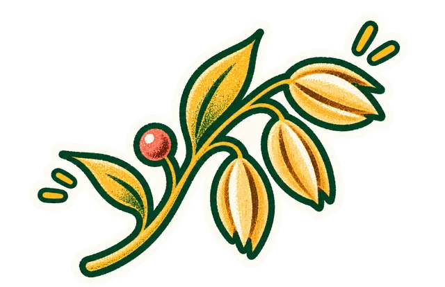
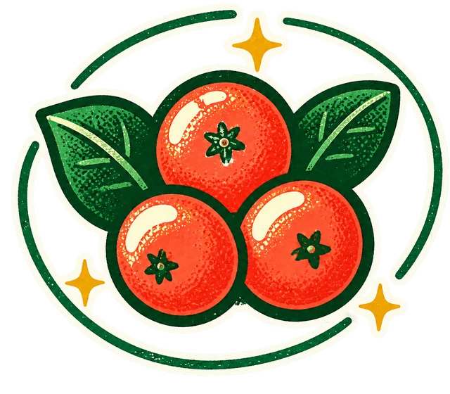
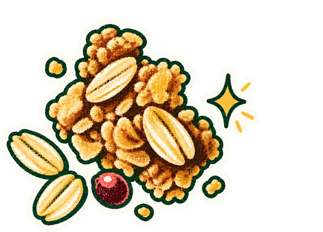
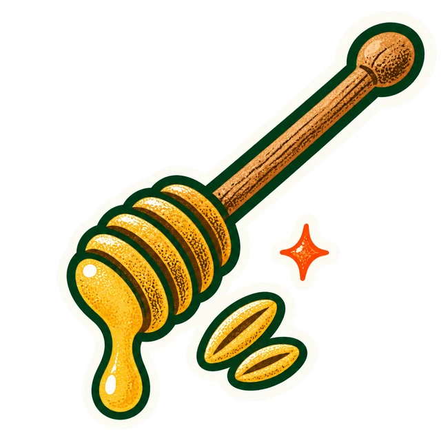
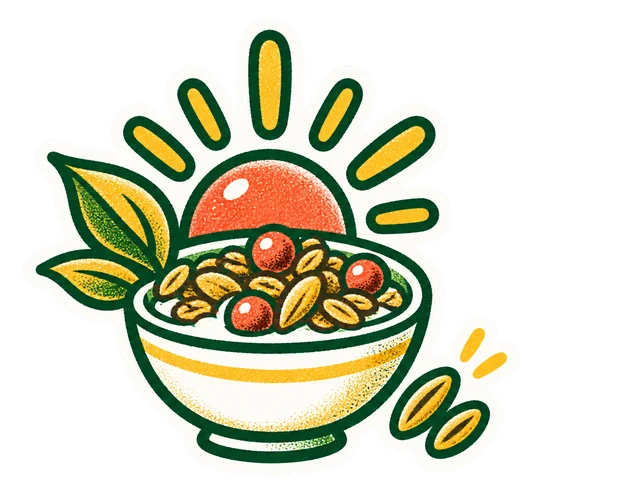

BOWLD
Menu



Honey Almond
3D pouch didn’t load.
This page needs to be served over http. Locally, run
npx serve
in the repo root and open
/bowld-hero/
— opening the file directly with
file://
blocks the model fetch.


BOWLD
Home
Granola
Ingredients
Journal
Stockists
Honey
Chocolate
Matcha